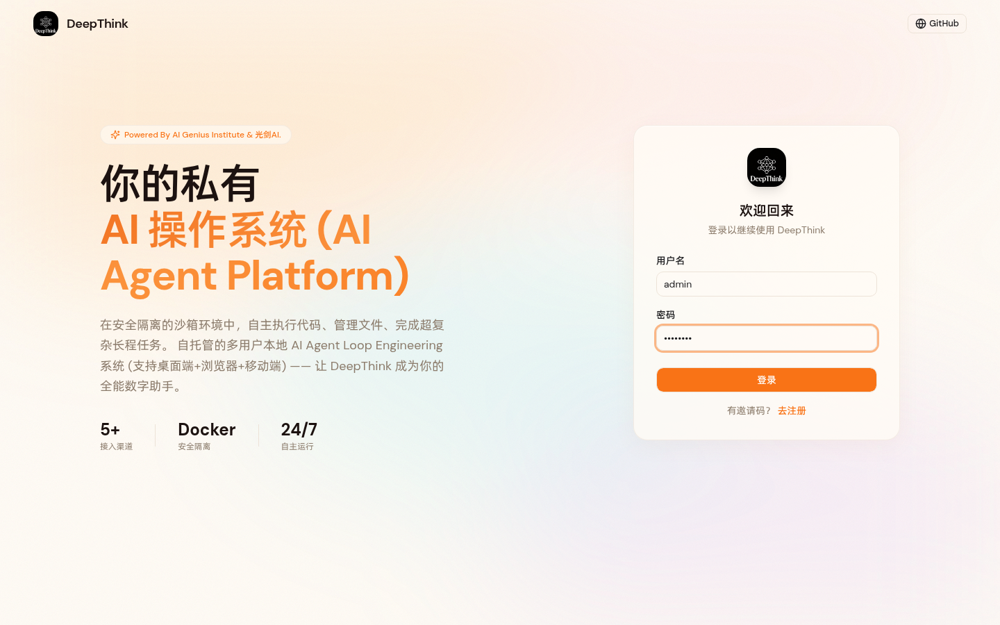
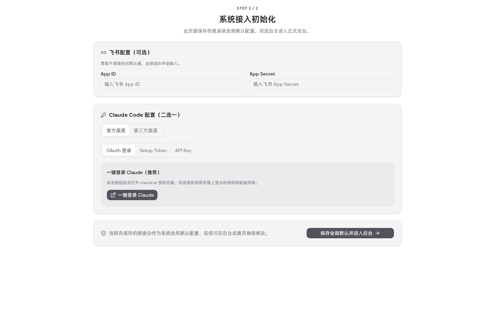

5 大能力（副作用分级 / 写操作幂等键 / 调用审计 / 滑动窗口限流 / 凭据 AES-256-GCM 加密）全部实现并通过验收。
测试文件：tests/units/tool-governance.test.ts，覆盖 F1 副作用分级 / F2 幂等键 / F3 调用审计 / F4 限流 / F5 凭据加密。
| 编号 | 功能域 | 用例 | 结果 |
|---|---|---|---|
| TC1 | F1 副作用 | GET 工具不传 sideEffect → DB read | PASS |
| TC2 | F1 | DELETE 工具 → admin | PASS |
| TC3 | F1 | 显式 write + GET → write | PASS |
| TC4 | F1 | PATCH 更新 sideEffect=admin 生效 | PASS |
| TC5 | F1 | resolveSideEffect 推断逻辑 | PASS |
| TC7 | F2 幂等 | 写工具 + 同 key 两次 → 上游 1 次 + 回放 | PASS |
| TC8 | F2 | read 工具 + 同 key → 上游 2 次（不缓存） | PASS |
| TC9 | F2 | 写工具失败 → 重试（上游 2 次） | PASS |
| TC10 | F3 审计 | 成功调用写 audit success | PASS |
| TC11 | F3 | 失败调用写 error | PASS |
| TC12 | F3 | 相同参数 args_hash 一致 + 不含明文 | PASS |
| TC13 | F3 | hashArgs 不含原始参数值 | PASS |
| TC15 | F4 限流 | read 120 次后第 121 次 429 | PASS |
| TC16 | F4 | write 30 次后超限 | PASS |
| TC17 | F4 | 不同 user 互不影响（隔离） | PASS |
| TC18 | F5 加密 | 带 authHeader 工具 → DB 无明文 | PASS |
| TC19 | F5 | 引擎解密 authHeader 注入上游 | PASS |
| TC20 | F5 | rotate token → DB 无明文 + 鉴权可用 | PASS |
| TC21 | F5 | 老明文 authHeader 迁移后加密 | PASS |
| TC14 | F5 | encryptSecret/decryptSecret 往返 + 明文透传 | PASS |
Test Files 1 passed (1)
Tests 20 passed (20)
Duration 444ms
Makefile test-smoke CI 门禁集，含既有 9 个测试文件 + 新增 tool-governance。
Test Files 10 passed (10)
Tests 122 passed (122)
Duration 1.25s
既有文件零回归：
- json-schema-validator / graph-validate-node / harness-eval
- chat-trace-store / open-platform-validation / graph-expr
- memory-write-trace / llm-call-trace / skill-im-command
新增：tool-governance
隔离实例 http://127.0.0.1:19999（独立 DATA_DIR=/tmp/tg-e2e，schema_version=60 冷启动）。
POST /api/mcp-registry/servers/{id}/tools
body: name=e2e_write_tool, method=POST, sideEffect=write,
authHeader.value="Bearer secret-e2e-xyz"
响应（节选）:
"sideEffect":"write",
"httpBinding":{"method":"POST","url":"...",
"authHeader":{"name":"Authorization",
"value":"enc:v1:TnqkXldsId/oBjP4aTpkURTEmlVr6/cR88rJzO7/+TZJbTxQO3FhiP2TJtcj+DtfQg=="}}
✅ 响应带 sideEffect=write
✅ DB 中 authHeader.value 已加密为 enc:v1: 前缀，明文 secret-e2e-xyz 不落库
调1: POST /tools/{id}/test Headers: Idempotency-Key: K1, X-Request-Id: req-e2e-1
→ {"isError":false,"content":[...],"idempotentReplay":false} ✅ 真实调上游
调2: POST /tools/{id}/test Headers: Idempotency-Key: K1, X-Request-Id: req-e2e-2
→ {"isError":false,"content":[...],"idempotentReplay":true} ✅ 命中回放，未调上游
GET /api/mcp-registry/audit-log?tool_id={id}
req-e2e-2 success 200 args_hash=44136fa355b3678a
req-e2e-1 success 200 args_hash=44136fa355b3678a ✅ 两次均审计，args_hash 一致
MCP 入口 POST /api/mcp-registry/mcp (Authorization: Bearer {registryToken})
连打 35 次 tools/call:
call1–call30 → HTTP 200
call31–call35 → HTTP 429
{"error":{"code":-32000,"message":"Rate limit exceeded (write: 30/60s). Retry after 60s."}}
✅ 第 31 次触发 429，Retry-After 头返回
POST /api/mcp-registry/token/rotate → 返回明文 token
POST /api/mcp-registry/mcp Authorization: Bearer {token}
body: {"method":"tools/list"}
→ {"tools":[{"name":"e2e_svc__e2e_write_tool","sideEffect":"write",...}]}
✅ token hash 鉴权可用；tools/list 输出 sideEffect 字段
登录页（http://127.0.0.1:19999/login）

首配向导（登录后跳转 /setup/providers，证明新前端构建已加载）

问题：db.ts 静态 import mcp-registry/crypto.ts → crypto.ts 静态 import runtime-config.ts → runtime-config 模块加载期需 config.js 的 ASSISTANT_NAME 等导出 → 39 个仅部分 mock config 的既有测试报 "No ASSISTANT_NAME export defined on config.js mock"。
解法：把 AES-256-GCM 逻辑内联到 db.ts（dbEncryptSecret/dbDecryptSecret/dbIsEncrypted/dbHashToken），直接读 DATA_DIR/config/claude-provider.key（与 runtime-config.getOrCreateEncryptionKey 同一文件、同一格式），彻底切断 db.ts → runtime-config 静态链。crypto.ts 保留静态 import 给 engine.ts 用（仅经 routes 加载，不进 db-only 测试依赖图）。两者密文格式 enc:v1:<base64(iv[12]||tag[16]||data)> 完全互操作。
验证：tsc exit 0；smoke 10 文件 122 测试全绿（含新增 20 + 既有 102 零回归，含此前受牵连的 chat-trace-store / open-platform-validation）。
| 验收项 | 证据 | 状态 |
|---|---|---|
| 副作用分级 read/write/admin | TC1-5 + E2E-1 响应 sideEffect 字段 | 达标 |
| 写操作幂等键（同 key 回放） | TC7-9 + E2E-2 idempotentReplay:true | 达标 |
| 调用审计（success/error + args_hash） | TC10-13 + E2E-2 audit-log 查询 | 达标 |
| 滑动窗口限流（per-user+tool+side） | TC15-17 + E2E-3 第31次429 | 达标 |
| 凭据 AES-256-GCM 加密落库 | TC18-21 + E2E-1 enc:v1: 前缀 | 达标 |
| token hash 鉴权（不存明文） | TC20 + E2E-4 Bearer 鉴权 | 达标 |
| schema_version 60 迁移幂等 | TC21 老明文迁移 + 冷启动 v60 | 达标 |
| 前端副作用徽标 + 编辑器 | RegistryPanel/ToolEditorDialog + tsc 零错 | 达标* |
| 既有测试零回归 | smoke 102/102 | 达标 |